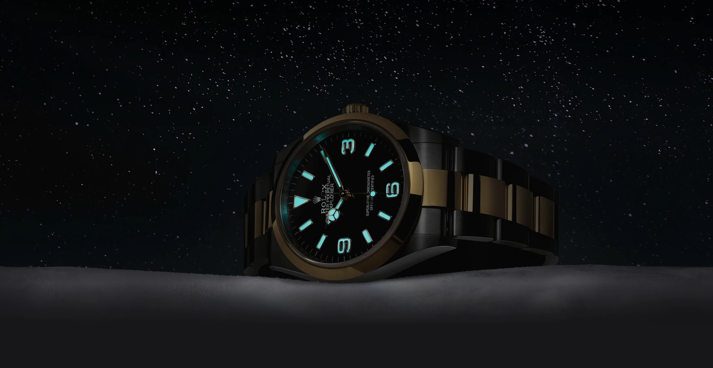

Pourquoi l’horlogerie ?
Introduction

Chers lecteurs,
J’avais moins de dix ans lorsque j’ai eu ma première montre au poignet.
C’était un cadeau de mon grand-père, plus précisément c’était le modèle flik-flak de la marque Swatch. (Oui oui, je suis né à l’avènement du Quartz) - Modèle toujours commercialisé.
Dès lors, cet objet ne représentait qu’un simple accessoire. Etant jeune, je ne réalisais pas forcément toutes les merveilles historiques qui se cachent derrière la fabrication de ces objets.
Au fil du temps, cet objet n’est pas resté q’un simple accessoire mais il est devenu un véritable outil insdispensable à mon quotidien. Comme pour le votre d’ailleurs 😋. A partir de ce moment, j’ai commencé à y accorder plus d’intérêt.
Ainsi, j’ai découvert un univers fascinant. Celui de l’horlogerie ! En effet, l’horlogerie peut-être définie comme le regroupement de la science, de la technique, de l’art, de l’industrie et du commerce dans le but de créer des instruments propres à mesurer le temps. C’est donc un univers très riche, qui regorge de merveilles historiques. Comme tout savoir-faire, le savoir-faire horloger n’a cessé d’évoluer au fil du temps et de s’adapter aux évolutions techniques et sociales. Il serait donc dommage de passer à côté de l’une des plus belles prouesses de l’humanité. Réussir à mesurer le temps.
L’intérêt pour cette discipline à été salvateur pour moi.
C’est pourquoi, j’ai donc décidé d’explorer cet univers exceptionnel et d’en partager mes savoirs avec vous.
Nous aborderons le sujet comme suit :
Nous parlerons des principales maisons horlogères possédant leur manufacture telles que Rolex, Omega, Cartier, Tudor, etc. Nous retracerons l’évolution des pratiques, des savoir-faire et des innovations technologiques dans le domaine de l’horlogerie.
Nous aborderons également le sujet d’un point de vue quantitatif. À travers de l’analyse de données, nous examinerons les caractéristiques des montres de luxe sur le marché de l’occasion. Nous expliquerons également comment les spécificités de chaque montre peuvent influencer leur prix.
Je partagerai et proposerai des fiches techniques sur les modèles que j’essaierai.
N’hesitez pas à me dire en commentaire si tu vous aimeriez que l’on aborde le sujet sous un autre angle !
Merci de votre lecture et à très bientôt. En d’autre termes, soyez à l’heure ⏱️ !